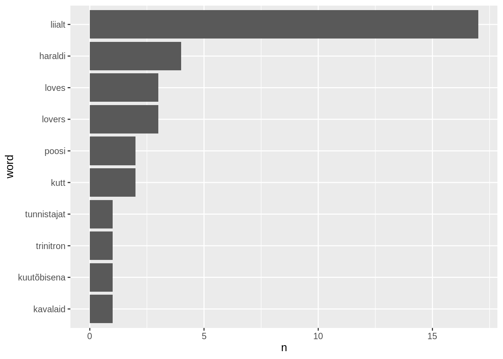
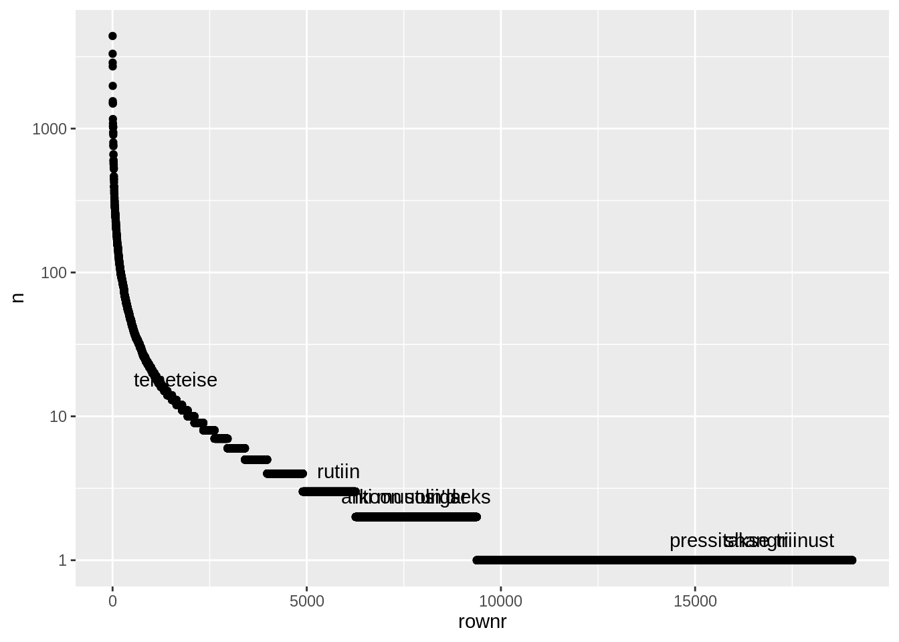

Peatükk 7 Graafikute loomine R-is
Siiani tegelesime puhtalt andmete töötlemisega. Ühe võimalusena kasutatakse neid edasiseks analüüsiks või ülevaadete koostamiseks. Teise võimalusena aga on võimalik tabelis leitud iva paigutada graafikule juba ülevaatlikult nähtavaks. Hea pilt on mõnikord väärt tuhat sõna, nagu öeldakse.
7.1 Graafiku ülesehitus
Tidyverse raamistikus ja R-is üldiselt on selle jaoks pakett ggplot2. Sellel on omakorda ka hulk laiendusi, mis avavad võimalike graafikute ringi. Tidyverse pakett loeb selle automaatselt sisse. Näidisena võime uuesti vaadata loengus nähtud gapminder graafikut. Vaata selle seletust siin: https://www.gapminder.org/answers/how-does-income-relate-to-life-expectancy/. Seal on kujutatud, kuidas inimeste keskmine eluiga sõltub riigi sissetulekust.
gapminder <- read.csv("data/gapminder.csv")
gapminder %>%
group_by(country) %>%
filter(year==max(year)) %>%
ggplot(aes(x=gdpPercap,y=lifeExp,size=pop,color=continent))+
geom_point()+
scale_x_log10()
Graafik ise on tehtud minimaalse andmetöötlusega (lihtsalt on vaja valida välja aasta) ja lihtsa struktuuriga. Seal määratakse ära, et x-teljel on rikkus, y-teljel on eluiga, punkti suurus sõltub rahvaarvust ja värv maailmajaost. Määratud on, et tegemist on punktgraafikuga ja x-telg on viidud logaritmskaalale.
Vaatame lähemalt, kuidas see graafik ehitatud on. Üldine põhimõte on ggplot2-es sama kui tidyverse-is üldisel. Et alustades mingist objektist lisatakse sellele aina töötlust. Ainult et joonise puhul ei muudeta pöördumatult loodud objekti, vaid lisatakse sellele uusi kihte, mis selle siis ümber kujundavad. ggplot() jooniste puhul on kihid ühendatud + märkidega, mitte %>% märgiga nagu ülejäänud tidyverse’is.
Ühe graafiku põhistruktuur on järgmine:
Võime selle struktuuri lahti seletada esimese näite põhjal. Alustuseks on meil siis andmestik. Teeme kohe vajalikud tööd sellega ära ja salvestame muutujasse ‘andmed’. Siis saame edasi otse sellele viidata.
Vaatame korraks ka sellesse tabelisse sisse. Seal on iga riigi kohta üks rida. Real on märgitud riigi nimi, maailmajagu, oodatav eluiga, rahvaarv ja rikkuse näiduna rahvuslik kogutoodang ehk gdp inimese kohta.
## # A tibble: 142 x 6
## # Groups: country [142]
## country continent year lifeExp pop gdpPercap
## <fct> <fct> <int> <dbl> <int> <dbl>
## 1 Afghanistan Asia 2007 43.8 31889923 975.
## 2 Albania Europe 2007 76.4 3600523 5937.
## 3 Algeria Africa 2007 72.3 33333216 6223.
## 4 Angola Africa 2007 42.7 12420476 4797.
## 5 Argentina Americas 2007 75.3 40301927 12779.
## 6 Australia Oceania 2007 81.2 20434176 34435.
## 7 Austria Europe 2007 79.8 8199783 36126.
## 8 Bahrain Asia 2007 75.6 708573 29796.
## 9 Bangladesh Asia 2007 64.1 150448339 1391.
## 10 Belgium Europe 2007 79.4 10392226 33693.
## # … with 132 more rowsNüüd sellest graafiku tegemiseks, saadame ta %>% toruga ggplot() funktsiooni. Alustuseks on graafik täiesti tühi.

ggplot() funktsiooni sisse saab määrata erinevaid parameetrid. Kõige tähtsamad parameetrid - see, mida kuvatakse lähevad omakorda aes() funktsiooni sisse. aes() ehk aesthetics (esteetika). Selle süntaks on üsna otsene, parameetrite nimed on selle järgi, kuhu info lõpuks saadetakse ja parameetri sisu on see tabeli tunnus, mis sinna peaks minema. Kui me määrame x-teljele gdp, seab ka graafik paika x-telje, mis mahutaks ära gdp. ggplot() saab aru, et tegemist on numberväärtusega ning paneb paika selle suurima ja väikseima väärtuse.
Määrates aes() funktsioonis y-telje, saab ggplot() samamoodi aru sellest, kuidas ehitada üles y-telg. Samade parameetrite alusel
Siis kui me määrame ära nad mõlemad korraga, saame ette koordinaatteljestiku, mida graafikul nägime.
Koordinaatteljele saame siis hakata asetama andmeid mitmel eri moel. Üks lihtsamaid viise on punktgraafik ehk hajuvusdiagramm. Iga rida ehk andmepunkt on siis kujutatud ühe punktina. Selle jaoks on lisame uue kihina geom_point(). Märka, et rea lõppu lisasime ka + märgi. Tulemus on näha all.
Meie graafik ülal oli veidike teistsugune seetõttu, et seal oli muudetud x-telje skaalat. Seda sellepärast, et tüüpiliselt rikkad riigid on väga väga rikkad, vaeste riikide vaheline kaugus on palju väiksem. Logaritm-muundamine vähendab andmestikus suurte väärtuste distantsi ja kasvatab väikeste väärtuste oma. Meie andmete puhul jaotab ta nad skaalale ühtlasemalt ära. Kujutamaks meie andmepunkte logarigm-skaalal lisame joonisele kihi scale_x_log10(), mis ütleb et kujutagu x-teljel väärtusi logaritmskaalal. Telgede muundamiseks on veel palju võimalusi. Nende avastamiseks vaadake ggplot2 paketi võimalusi.
Nüüd on graafik juba sama kujuga kui oli alguses. Puudu on veel punktide värvid ja suurused. Samamoodi nagu x-telg ja y-telg, läheb see info aes() funktsiooni sisse. Määrame ära, et suuruseks on rahvaarv, ehk size = pop. Rahvaarv on numbriline väärtus ja ggplot2 leiab punkti suurusele ise skaala, mis sobib nende väärtustega.
Ja määrame lisaks ka, et punkti värv peaks tulenema maailmajaost. Kuna maailmajagu on faktormuutuja, kus R näeb ära, et seal on viis eri väärtust, leiab ta viis värvi, mida seal kasutada. Ja kokkuvõttes saamegi sama graafiku, mis oli alguses.
7.2 Joonisekihtide liigid
Täpselt samamoodi kui rahvastikuandmetega ülal saame käituda ka tekstidest tehtud tabelitega. Lihtsalt me peame valmistama andmetabeli. Määratlema ära, mis on x-teljel, mis on y-teljel, mis määrab ära värvi jne ning mis kihte me graafikule selle põhjal lisame.
Peamised kihid, millega tasuks tuttav olla on:
- ggplot() - aluskiht
- geom_point() - punktgraafik, kus iga andmepunkt on punkt
- geom_line() - joongraafik, kus need punktid on mingil alusel ühendatud joontega
- geom_col() - tulpdiagramm, kus tulba suurus näitab väärtuse suurust
- geom_text() - lisab teksti graafikule. teksti asukohad on samuti x ja y telje järgi
- geom_tile() - ruudustikgraafik, kus x ja y telg määravad millise ruuduga on tegemist
Näiteks võime alustuseks teha graafiku parimatest artistidest ja kuvada mitu lugu neil edetabelites oli. Meil on selleks vaja jälle algandmeid.
## Parsed with column specification:
## cols(
## year = col_double(),
## rank = col_double(),
## votes = col_double(),
## artist = col_character(),
## song = col_character(),
## filename = col_character(),
## source = col_double(),
## lyrics = col_character(),
## language = col_character()
## )Loendame edetabelis artistide esinemiskordi ning võtame neist välja esikümne. Alustame tühjast graafikust.

Märgime ära graafiku skaala. X-teljele artisti nime ja y-teljele lugude arvu. Nüüd teeb ggplot() veidi teistsuguse graafiku kui eelmine, kuna artisti nimi ei ole number ning sellele ei ole võimalik teha sujuvat skaalat. Selle asemel kirjutab ggplot kõik nimed graafiku allserva.
Lisame nüüd punktikihi, kus iga punkt paikneb oma artisti kohal ning tähistab seda, kui palju lugusid tal oli.
edetabel %>%
count(artist,sort=T) %>%
filter(row_number()<11) %>%
ggplot(aes(x=artist,y=n))+
geom_point()Ja punktid jõudsidki graafikule. Antud juhul võiks ehk tulpdiagramm sobida paremini kui punktid. Asendame selle jaoks geom_point() funktsiooni geom_col() funktsiooniga. X-telg ja y-telg võivad jääda samaks. Tulbad annavad mastaabist parema ülevaate.
edetabel %>%
count(artist,sort=T) %>%
filter(row_number()<11) %>%
ggplot(aes(x=artist,y=n))+
geom_col()Ja ongi muudetud. Märgata võib, et hetkel on nimed tabelis tähestiku järjekorras, mis ehk ei anna kõige paremat ettekujutust sellest, mis järjekorras see top10 ikkagi on. See on nii sellepärast, et tegemist on faktor-muutujaga, mille jaoks me ei ole andnud ggplot()-ile eraldi juhiseid. Faktor-muutujad on tihti vaikimisi tähestiku järjekorras. Tasemete muutmiseks on mitmeid viise (vaata sissejuhatavat osa). Tidyverse’is on pakutud faktorite töötluseks omaette pakett forcats ehk for categorical variables (kategooriliste tunnuste jaoks). Tasemete järjestuse muutmiseks on seal eraldi käsk fct_reorder(), kus tuleb lihtsalt näidata, mis tulpa järjestada ja siis anda järjestamise alus. Antud juhul püüame siis järjestada artisti tulba tasemeid n tulba väärtuste alusel, kahanevas järjekorras. Selle jaoks võime kirjutada fct_reorder(artist, -n). Miinusmärk n ees muudab pöörab ümber numbrite skaala kuna miinusmärgiga on suuremad numbrid väiksema väärtusega ehk -100 on väiksem kui -1.
edetabel %>%
count(artist,sort=T) %>%
filter(row_number()<11) %>%
mutate(artist=fct_reorder(artist,-n)) %>%
ggplot(aes(x=artist,y=n))+
geom_col()Ilusama graafiku jaoks on võimalik jälle telgi sättida veidi, seekord võime ära vahetada x-telje ja y-telje. Selle jaoks on käsk coord_flip(). Sellisel juhul ehk sobib ka paremini järjestada artistid miinusmärgita n alusel.
edetabel %>%
count(artist,sort=T) %>%
filter(row_number()<11) %>%
mutate(artist=fct_reorder(artist,n)) %>%
ggplot(aes(x=artist,y=n))+
geom_col()+
coord_flip()Me võime teha kõiki endale tuttavaid operatsioone oma andmetega. Me võime näiteks hea sarnase tulpdiagrammi Smilersi lugude nimedega. Paneme lugude arvu asemel y-teljele nende koha edetabelis. X-teljele läheb artisti asemele siis loo nimi. Teeme taaskord vahetatud telgedega tulpdiagrammi geom_col().
Ja joondame nad fct_reorder() abil edetabelipositsiooni järgi.
edetabel %>%
filter(artist=="Smilers") %>%
mutate(song=fct_reorder(song,rank)) %>%
ggplot(aes(x=song,y=rank))+
geom_col()+
coord_flip()Nüüd näeme tabelist, et kuna mõni lugu esines kaks korda, siis pole tulpdiagramm ehk selle jaoks parim. Muudame geom_col() geom_point()-iks, et teha tulpdiagrammist punktdiagramm.
edetabel %>%
filter(artist=="Smilers") %>%
mutate(song=fct_reorder(song,rank)) %>%
ggplot(aes(x=song,y=rank))+
geom_point()+
coord_flip()Tähele võib panna, et fct_reorder() võttis lugude järjestamisel aluseks punktide keskmise. See on antud vaikeväärtusena nii selles funktsioonis. Et meie võimalusi lähemalt uurida, võime kasutada ?fct_reorder, et näha selle võimalusi.
Selle põhjal näeme, et lisaks hädavajalikele parameetritele võib lisada ka sellele funktsioonile kolmanda parameetri, mis on vaikimisi mean ehk keskmise võtmine. Me võime selle asemele panna min ehk miinimumi võtmine ja siis me saame need lood järjestatud just parima koha alusel. Nüüd on järjekord veidi teistsugune ja mitu aastat tabelis olnud lood ei saa selle eest enam miinuspunkte.
edetabel %>%
filter(artist=="Smilers") %>%
mutate(song=fct_reorder(song,rank,min)) %>%
ggplot(aes(x=song,y=rank))+
geom_point()+
coord_flip()Sarnaseid graafikuid võime teha ükskõik millest. Näiteks võime teha sama oma sagedussõnastikuga. Kõigepealt teeme laulude tekstid sõnadeks ja salvestame selle muutuja, kuna me kasutame seda korduvalt.
Seejärel loendame sõnu, võtame neist top10, muudame sõnade tasemete järjekorda ja kuvame nad samasuguse tulpdiagrammiga. Saamegi ülevaate sellest kui palju oli kõige levinumaid sõnu terve tekstikorpuse peale.
laulusonad %>%
count(word,sort=T)%>%
filter(row_number()<11) %>%
mutate(word=fct_reorder(word,n)) %>%
ggplot(aes(x=word,y=n))+
geom_col()+
coord_flip()Me võime kuvada ka mõne muu osa nendest sõnadest, näiteks siis sõnad mis olid 120.-130. kohal populaarsuselt. Nagu mujalgi, saame andmeid viia varem sellisele kujule nagu me soovime.
laulusonad %>%
count(word,sort=T)%>%
filter(row_number()>120&row_number()<131) %>%
mutate(word=fct_reorder(word,n)) %>%
ggplot(aes(x=word,y=n))+
geom_col()+
coord_flip()Võime ka kasutada sample_n() funktsiooni võtta 10 juhuslikku sõna. Iga kord kui me seda koodi jooksutame, saame sedasi uue tabeli.
laulusonad %>%
count(word,sort=T)%>%
sample_n(10)%>%
mutate(word=fct_reorder(word,n)) %>%
ggplot(aes(x=word,y=n))+
geom_col()+
coord_flip()
Me võime samal viisil kuvada ka kõik sõnad. Kuna sõnu on kokku väga palju, siis tasub ehk neid kuvada mitte nimeliselt vaid mõne muu tunnuse alusel. Võtame selleks näiteks populaarsuse järjekorranumbri lihtsalt. Jooniselt on näha, keeleteaduses tuntud zipf-i seadust, et ainult üksikuid sõnu on tekstides väga palju, aga suurem osa sõnu on üpris haruldased.
laulusonad %>%
count(word,sort=T)%>%
mutate(rownr=row_number()) %>%
ggplot(aes(x=rownr,y=n))+
geom_point()Saame ehk veidi parema pildi kasutades jälle logaritm-skaalat.
laulusonad %>%
count(word,sort=T)%>%
mutate(rownr=row_number()) %>%
ggplot(aes(x=rownr,y=n))+
geom_point()+
scale_y_log10()Et joonisest veel paremini aru saada, võime lisada ka nimed mõnele punktidest. Selleks salvestame ajutiselt meie tabeli, kuna meil on vaja seda hiljem muundada ja võtta sealt kümme juhuslikku rida.
Kui me asetame aes() funktsiooni hetkel ggplot() sisse, mis juhib tervet graafikut, siis me võime nii andmestikku kui parameetreid sättida ka igal kihil eraldi. Näiteks hetkel, nimede saamiseks võime geom_text() sisse panna uued andmed, mis on ainult alamhulk tervest andmestikust, mis on saadud sample_n() funktsiooni kaudu. geom_text kasutab label parameetrit teksti leidmiseks.
plotdata %>%
ggplot(aes(x=rownr,y=n,label=word))+
geom_point()+
geom_text(data=plotdata %>% sample_n(10),vjust=-1)+
scale_y_log10()
Spetsiifilisemaid edetabeleid võib teha mitmeti. Näiteks võtame kõik Põhja-Tallinna lood ja kuvada nende saadud edetabelikohad läbi aastate.
Võime neile kõigile lisada ka nimed, kasutades selleks geom_text() funktsiooni ja label parameetrit.
edetabel %>%
filter(artist=="Põhja-Tallinn") %>%
ggplot(aes(x=year,y=rank, label=song))+
geom_point()+
geom_text(vjust=-1)Lisaks võime lisada neile ka joone. Ütleme, et graafik grupeeriks laule nende nimede alusel. Nii saavad sama loo eri aastakäigud ühendatud kokku.
edetabel %>%
filter(artist=="Põhja-Tallinn") %>%
ggplot(aes(x=year,y=rank, label=song,group=song))+
geom_point()+
geom_line()+
geom_text(vjust=-1)Lisaks võime värvida nad kõik ka aastakäigu järgi. Selleks et aastakäiku lugeda kategoorilise muutujana, paneme selle ümber funktsiooni factor().
edetabel %>%
filter(artist=="Põhja-Tallinn") %>%
ggplot(aes(x=year,y=rank, label=song,group=song,color=factor(year)))+
geom_point()+
geom_line()+
geom_text(vjust=-1)Viimaks võime anda tabelile ka pealkirja labs() funktsiooni kaudu. Sarnaselt nagu aes() funktsiooniski, tuleb lihtsalt anda parameetrite nimed selle järgi, kuhu info saata. title määrab pealkirja, x määrab x-telje väärtuse, y määrab y-telje väärtuse.
edetabel %>%
filter(artist=="Põhja-Tallinn") %>%
ggplot(aes(x=year,y=rank, label=song,group=song,color=factor(year)))+
geom_point()+
geom_line()+
geom_text(vjust=-1)+
labs(title="Pealkiri läheb siia",x="x-telg",y="y-telg")Kui me oleme loendanud erinevat tüüpi andmeid, võiksime selle näitamiseks kasutada samuti värvi. Näiteks meie andmestikus leiame lugusid mitmes eri keeles ning me võime neid loendada.
## # A tibble: 6 x 2
## language n
## <chr> <int>
## 1 en 133
## 2 es 1
## 3 et 686
## 4 fr 1
## 5 it 1
## 6 <NA> 178Seejuures võime me neid loendada ka aastate kaupa.
## # A tibble: 76 x 3
## language year n
## <chr> <dbl> <int>
## 1 en 1994 2
## 2 en 1995 2
## 3 en 1997 4
## 4 en 1998 3
## 5 en 1999 10
## 6 en 2000 10
## 7 en 2001 3
## 8 en 2002 8
## 9 en 2003 8
## 10 en 2004 9
## # … with 66 more rowsJa sellest andmestikust saamegi teha juba tulpdiagrammi. Selle jaoks, et anda tulpadele värvi, saame kasutada parameetrit fill, mis määrab värvitava ala täite. Asetame selleks keele parameetri.
Joonisel on siis näha, mis keeles said lood eesti edetabelisse ja on ehk huvitav näha, et viimase 25 aasta jooksul on peaaegu alati olnud mõned lood inglise keeles, aga need on alati olnud üsna väike hulk tervest kogusest. Samas tuleb ka märgata, et paljudel lugudel on sõnad puudu ja seetõttu ka keel määramata.
Me võime teha tulpdiagramme ka üksikute sõnade kohta. Võime näiteks võta Kuldse Trio kõige sagedamini kasutatud sõnad.
laulusonad %>%
group_by(artist) %>%
count(word,sort=T) %>%
filter(artist=="Kuldne Trio") %>%
mutate(word=fct_reorder(word,n)) %>%
filter(row_number()<11) %>%
ggplot(aes(x=word,y=n,fill=word))+
geom_col()+
coord_flip()Ja sama võime teha ka märksõnade kohta, järjestades nad selle alusel kui eristavad nad Kuldsele Triole on.
laulusonad %>%
group_by(artist) %>%
count(word) %>%
bind_tf_idf(word, artist,n) %>%
arrange(desc(tf_idf)) %>%
filter(artist=="Kuldne Trio") %>%
mutate(word=fct_reorder(word,tf_idf)) %>%
filter(row_number()<11) %>%
ggplot(aes(x=word,y=tf_idf,fill=word))+
geom_col()+
coord_flip()Me võime ka uuesti vaadata sõnu laulude sees. Selleks taaselustame sõnade asukohad ja kordused ning salvestame nad muutujatena.
asukohad <- laulusonad %>%
group_by(artist,song,year) %>%
mutate(nr=row_number(), n=n()) %>%
mutate(asukoht=nr/(n+1)) %>%
mutate(asukoht_perc=floor(asukoht*10)/10)%>%
ungroup()
kordused <- laulusonad %>%
filter(language=="et") %>%
group_by(artist, song,year) %>%
count(word,sort=T) %>%
filter(!word %in% c("ref")) %>%
mutate(proportsioon=n/sum(n)) %>%
arrange(desc(proportsioon)) %>%
ungroup()
asukohad_ja_kordused <- kordused %>%
filter(row_number()<21) %>%
inner_join(asukohad,by=c("artist","song","year","word"))
kus_on_kordused <- asukohad_ja_kordused %>%
group_by(artist,song,year,word) %>%
count(asukoht_perc) Me võime lihtsalt võtta siis 20 kõige enamate kordustega sõna ühes loos ning kuvada nende asukohad x teljele. Y-teljele võiks panna sõna, aga et oleks selge, et on ikka see sõna selles loos, asetame sinna sõna ja laulu kombinatsiooni. Selleks on ggplot2-s interaction() funktsioon, mis võib graafikule panna kategooriliste muutujate kombinatsioone.
Viimaks võime trükkida ka varasemas peatükis trükitud tabeli graafiliselt, kus iga laul on jaotatud kümnendikeks ja igas kümnendikus on võetud selle sõna esinemise suhteline sagedus. Selleks sobib geom_tile() funktsioon, mis asetab väärtused graafikul ruudustikule.
7.3 Tabeli viimistlemine
See mida me võime kuvada sõltub puhtalt sellest, kuidas me andmeid töötleme ja esitame. Lõpuks maksab ka see kuidas me seda viimistleme. Me võime nende andmetega moodustada ka ajalise ülevaate parimatest eesti popartistidest - et kui kaua nad on tipus olnud. Võime selleks võtta meie artistide edetabeli top10.
Kõrvale saame teha teise tabeli, mis võtab välja esimese ja viimase aasta kui artist edetabelisse jõudis.
Me saame nad kokku panna inner_join() funktsioniga ja saamegi tabeli, mida kuvada.
## # A tibble: 10 x 4
## artist n first last
## <fct> <int> <dbl> <dbl>
## 1 Smilers 47 1996 2016
## 2 Terminaator 46 1994 2017
## 3 2 Quick Start 24 1994 2011
## 4 Ines 21 1999 2014
## 5 Tanel Padar & The Sun 16 2005 2015
## 6 Ott Lepland 15 2009 2017
## 7 Caater 14 1997 2002
## 8 Põhja-Tallinn 14 2012 2017
## 9 Jam 12 1994 2004
## 10 Laura 12 2005 2018Kuvamiseks võiksime teha joondiagrammi iga artisti kestusajast. Võime nüüd kasutada lisatrikki, millega saab aes() funktsiooni panna iga kihi sisse eraldi. See kehtib siis oma kihi piires. Märgime siis esimese edetabeliloo aja ühe punktina ja teise edetabeliloo aja teise punktina.
top10 %>%
inner_join(artist_career,by="artist") %>%
mutate(artist=fct_reorder(artist,n)) %>%
ggplot()+
geom_point(aes(x=artist,y=first))+
geom_point(aes(x=artist,y=last))Vahetame ära x ja y telje.
top10 %>%
inner_join(artist_career,by="artist") %>%
mutate(artist=fct_reorder(artist,n)) %>%
ggplot()+
geom_point(aes(x=artist,y=first))+
geom_point(aes(x=artist,y=last))+
coord_flip()Seejärel võime lisada ka joone geom_segment(), mis algab esimesest aastast ja lõppeb viimase aastaga ning püsib kogu ulatuses artisti joonel. Näeme, et Smilers ja Terminaator on meid saatnud peaaegu kogu tabelite kestvuse aja. Caater oli küll äärmiselt populaarne, aga seda üsna lühikest aega. Ott Lepland ja Põhja-Tallinn on aga ilmselt alles tõusuteel.
top10 %>%
inner_join(artist_career,by="artist") %>%
mutate(artist=fct_reorder(artist,n)) %>%
ggplot()+
geom_point(aes(x=artist,y=first))+
geom_point(aes(x=artist,y=last))+
geom_segment(aes(x=artist,xend=artist,y=first,yend=last))+
coord_flip()Graafiku väljanägemise parandamiseks võime talle lisada ka visuaalse teema theme_bw() ehk mustvalge teema. Ja tegelikult olles lisanud geom_segment funktsiooni, ei ole need punktid joonte otstes enam vajalikud.
top10 %>%
inner_join(artist_career,by="artist") %>%
mutate(artist=fct_reorder(artist,n)) %>%
ggplot()+
geom_segment(aes(x=artist,xend=artist,y=first,yend=last),size=3)+
coord_flip()+
theme_bw()+
labs(title="Eesti artistide karjäärid SkyPlus Top 40-s 1994-2019",x="",y="")Viimaks võime me salvestada selle graafiku ka eraldi failina. ggplot2-s on selle jaoks funktsioon ggsave(), mis vaikimisi võtab viimase trükitud graafiku ja salvestab selle meie nimetatud kohta. Graafiku tüübi võtab ta faili nime järgi. Salvestame selle näiteks .png failina. ggsave() määrab sellele ise suuruse - see ei pruugi minna alati täppi.
## Saving 7 x 5 in imageKui me soovime mõne muu graafiku salvestada kui viimasena trükitu, siis on meil võimalik iga graafik salvestada muutujasse nagu tabelidki ja siis anda ggsave funktsioonile see muutuja.
p <- top10 %>%
inner_join(artist_career,by="artist") %>%
mutate(artist=fct_reorder(artist,n)) %>%
ggplot()+
geom_segment(aes(x=artist,xend=artist,y=first,yend=last),size=3)+
coord_flip()+
theme_bw()+
labs(title="Eesti artistide karjäärid SkyPlus Top 40-s 1994-2019",x="",y="")
ggsave("figures/top10_parimad_aastad.png",p)## Saving 7 x 5 in image7.4 Sõnastik
- märk - ggplot kihtide sidumiseks
- ggplot() - aluskiht
- geom_point() - punktgraafik, kus iga andmepunkt on punkt
- geom_line() - joongraafik, kus need punktid on mingil alusel ühendatud joontega
- geom_col() - tulpdiagramm, kus tulba suurus näitab väärtuse suurust
- geom_text() - lisab teksti graafikule. teksti asukohad on samuti x ja y telje järgi
- geom_tile() - ruudustikgraafik, kus x ja y telg määravad millise ruuduga on tegemist
- fct_reorder() - faktormuutuja tasemete järjestuse muutmiseks
7.5 Harjutusülesanded
Tee graafik 2000ndate kõige populaarsematest artistidest selle alusel, mitu lugu edetabelisse sai.
Vali üks artist ning tee ülevaade kõigist tema lugudest, mis said edetabelisse. Lisa tabelile tekstikiht loo nimedega.
Vali üks artist ja tee tabel nende enim kasutatud sõnadest.
Tee sama graafik nii et stopsõnad on eemaldatud.
Tee sama graafik tf-idf märksõnade alusel.